library("ggplot2"); packageVersion("ggplot2")## [1] '2.1.0'theme_set(theme_bw())
library("plyr"); packageVersion("plyr")##
## Attaching package: 'plyr'## The following object is masked from 'package:IRanges':
##
## desc## The following object is masked from 'package:S4Vectors':
##
## rename## [1] '1.8.4'library("data.table"); packageVersion("data.table")## data.table 1.9.6 For help type ?data.table or https://github.com/Rdatatable/data.table/wiki## The fastest way to learn (by data.table authors): https://www.datacamp.com/courses/data-analysis-the-data-table-way##
## Attaching package: 'data.table'## The following object is masked from 'package:SummarizedExperiment':
##
## shift## The following object is masked from 'package:GenomicRanges':
##
## shift## The following object is masked from 'package:IRanges':
##
## shift## [1] '1.9.6'set.seed(711L)
Let’s define an imaginary and simple vector of proportions of bacterial taxa in a community.
OTUproportions = c(0.3, 0.2, 0.1,
rep(0.05, 5),
rep(0.025, 6),
rep(0.001, 6),
rep(0.0001, 6))
names(OTUproportions) <- LETTERS[1:length(OTUproportions)]
OTUproportions## A B C D E F G H I J
## 0.3000 0.2000 0.1000 0.0500 0.0500 0.0500 0.0500 0.0500 0.0250 0.0250
## K L M N O P Q R S T
## 0.0250 0.0250 0.0250 0.0250 0.0010 0.0010 0.0010 0.0010 0.0010 0.0010
## U V W X Y Z
## 0.0001 0.0001 0.0001 0.0001 0.0001 0.0001sum(OTUproportions)## [1] 1.0066# Plot it to be clear.
spdf = data.frame(proportion=OTUproportions, Taxa=names(OTUproportions))
p = ggplot(spdf, aes(Taxa, proportion)) + geom_bar(stat="identity")
p + ggtitle("The 'true' Taxa proportions")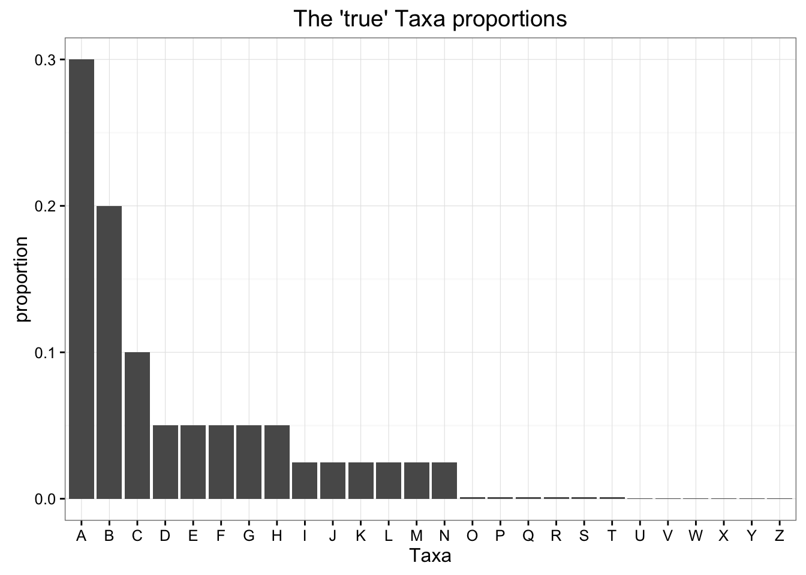
Now sample from these true proportions, and plot the uncertainty. This uses the sample function in R.
sim1 = sample(x=names(OTUproportions), size=100, replace=TRUE, prob=OTUproportions)
sim1## [1] "A" "B" "B" "H" "B" "A" "B" "A" "C" "E" "A" "H" "L" "D" "I" "I" "F"
## [18] "F" "M" "G" "A" "B" "B" "A" "A" "A" "H" "H" "A" "D" "C" "D" "A" "F"
## [35] "I" "E" "B" "C" "D" "E" "A" "A" "B" "B" "M" "E" "C" "A" "A" "I" "D"
## [52] "E" "M" "C" "F" "B" "G" "E" "H" "A" "B" "B" "A" "A" "F" "B" "A" "N"
## [69] "G" "F" "A" "B" "A" "H" "A" "A" "A" "H" "H" "H" "D" "A" "H" "F" "B"
## [86] "A" "K" "G" "A" "A" "A" "G" "C" "B" "A" "B" "G" "Q" "B" "B"sim1df = data.frame(table(sim1))
sim1df## sim1 Freq
## 1 A 29
## 2 B 19
## 3 C 6
## 4 D 6
## 5 E 6
## 6 F 7
## 7 G 6
## 8 H 10
## 9 I 4
## 10 K 1
## 11 L 1
## 12 M 3
## 13 N 1
## 14 Q 1sim1df$proportion <- sim1df$Freq/sum(sim1df$Freq)
colnames(sim1df)[1] <- "Taxa"
# Add simulated proportions to the plot of the true proportions.
title = "One realization of multinomial sampling process"
p + geom_point(data=sim1df, color="blue", size=6) +
ggtitle(title)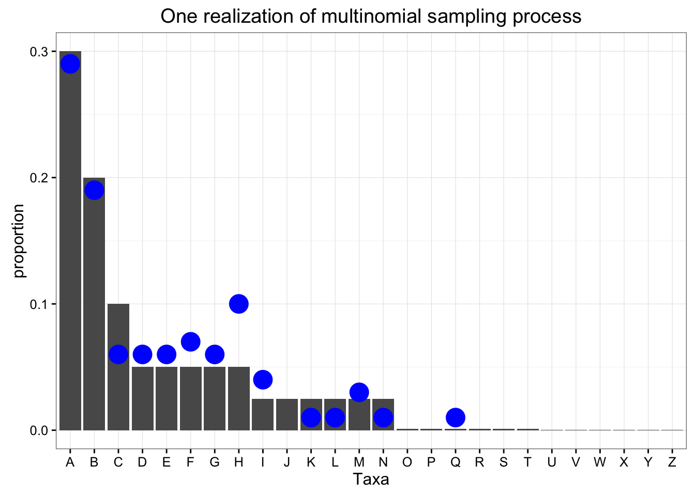
Define and test a function that simulates from this
simulate_community = function(props, size){
# props = OTUproportions
# size = 100
simi = sample(x=names(props), size=size, replace=TRUE, prob=props)
simidf = data.table(table(simi))
simidf[, proportion := N / sum(N, na.rm = TRUE)]
setnames(simidf, "simi", "Taxa")
return(simidf)
}
# Test the function
show(simulate_community(OTUproportions, 200))## Taxa N proportion
## 1: A 69 0.345
## 2: B 35 0.175
## 3: C 15 0.075
## 4: D 7 0.035
## 5: E 8 0.040
## 6: F 9 0.045
## 7: G 10 0.050
## 8: H 16 0.080
## 9: I 7 0.035
## 10: J 6 0.030
## 11: K 4 0.020
## 12: L 4 0.020
## 13: M 6 0.030
## 14: N 4 0.020# Repeat twice, store as list
replicate(2, simulate_community(OTUproportions, 100), simplify = FALSE)## [[1]]
## Taxa N proportion
## 1: A 29 0.29
## 2: B 23 0.23
## 3: C 9 0.09
## 4: D 4 0.04
## 5: E 4 0.04
## 6: F 5 0.05
## 7: G 3 0.03
## 8: H 5 0.05
## 9: J 2 0.02
## 10: K 4 0.04
## 11: L 5 0.05
## 12: M 4 0.04
## 13: N 2 0.02
## 14: Q 1 0.01
##
## [[2]]
## Taxa N proportion
## 1: A 27 0.27
## 2: B 21 0.21
## 3: C 7 0.07
## 4: D 2 0.02
## 5: E 9 0.09
## 6: F 2 0.02
## 7: G 6 0.06
## 8: H 8 0.08
## 9: I 2 0.02
## 10: J 5 0.05
## 11: K 2 0.02
## 12: L 1 0.01
## 13: M 5 0.05
## 14: N 3 0.03
Now repeat the simulated Taxa sampling many times at different library sizes.
N = 300
LibrarySizes = c(100, 2000, 30000, 400000)
bigdt = rbindlist(lapply(X = LibrarySizes, FUN = function(libsz){
listi = replicate(N, simulate_community(OTUproportions, libsz), simplify=FALSE)
dti = rbindlist(listi)
dti[, LibrarySize := as.character(libsz)]
return(dti)
}))
title = "Accuracy of Individual Simulations"
p + geom_point(aes(color=LibrarySize, fill=LibrarySize), data=bigdt,
position=position_jitterdodge(), size=1) +
ggtitle(title)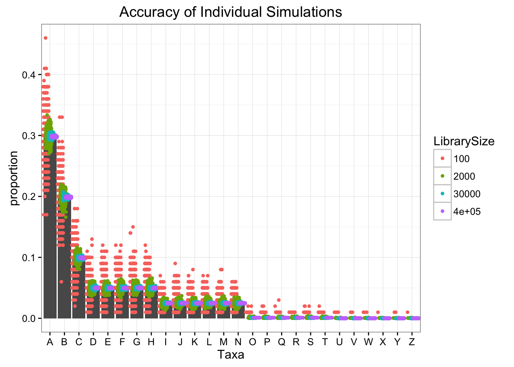
title = "Accuracy of Aggregate Simulations (boxplot)"
p + geom_boxplot(aes(fill=LibrarySize),
data=bigdt,
position="dodge") +
ggtitle(title)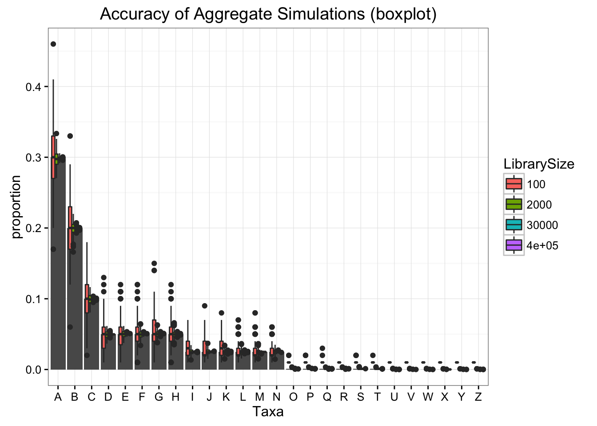
bigdt[, TrueProportion := spdf[Taxa, "proportion"]]
bigdt[, Residual := proportion - TrueProportion]
bigdt[, Error := abs(Residual)]
bigdt[, StdErr := Residual / proportion]ggplot(bigdt, aes(x = N,
y = Residual,
color = factor(TrueProportion),
shape = LibrarySize)) +
geom_point(size = 2, alpha = 0.5) +
scale_x_log10() +
annotation_logticks(sides = "b") +
ggtitle("Residual v. Absolute Count")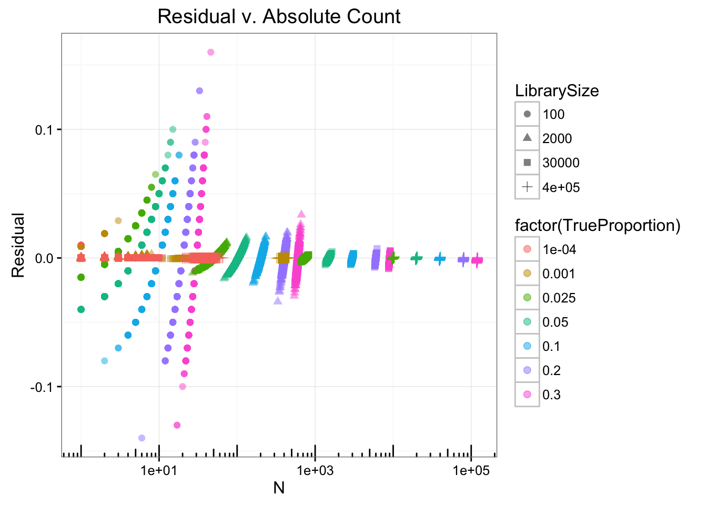
Graphically summarize variance, standard deviation, and error.
First prepare data for plotting
# Summarize by trial and Taxa
bigdt2 = ddply(bigdt, c("LibrarySize", "Taxa"), function(x){
data.frame(Variance = var(x$N),
standardDeviation = sd(x$N),
meanCount = mean(x$N),
meanProp = mean(x$proportion),
L = as.integer(x$LibrarySize[1])
)
})
bigdt2 <- data.table(bigdt2)
bigdt2[, TrueProportion := spdf[Taxa, "proportion"]]
bigdt2[, cv := Variance / as.numeric(LibrarySize)]Define plots
# Plots
title = "Accuracy and Library Size"
p + geom_boxplot(aes(fill=LibrarySize), data=bigdt, position="dodge") +
geom_errorbar(data=bigdt2, position="dodge",
aes(x=Taxa, y=NULL, colour=LibrarySize,
ymax=meanProp+standardDeviation/L,
ymin=meanProp-standardDeviation/L)) +
ggtitle(title)## Warning: Removed 2 rows containing missing values (geom_errorbar).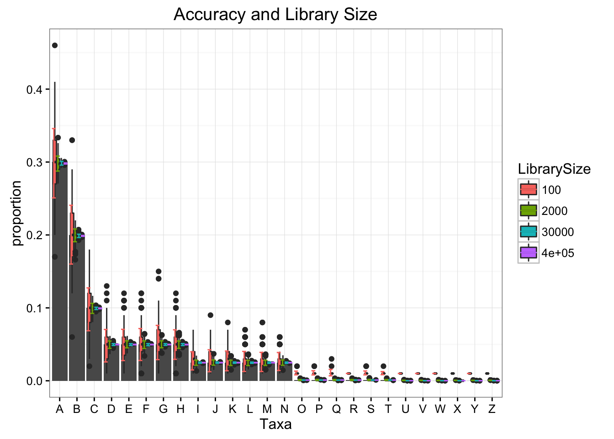
title = "Observed Variance versus Observed Mean Counts"
ggplot(data = bigdt2,
mapping = aes(x = meanCount,
y = Variance,
colour=LibrarySize)) +
geom_point(size=5, alpha=0.5) +
geom_abline(intercept = 0, slope = 1) +
scale_y_log10() +
scale_x_log10() +
annotation_logticks(sides = "lb") +
ggtitle(title)## Warning: Removed 2 rows containing missing values (geom_point).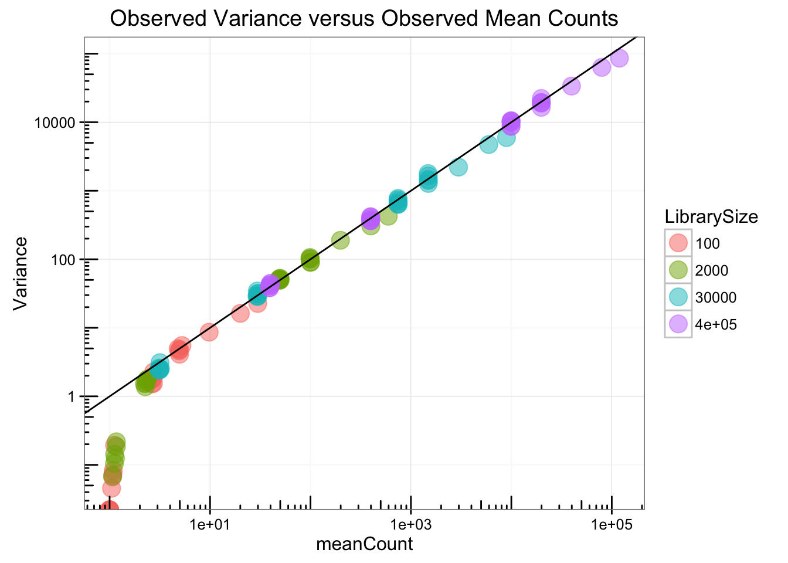
title = "Observed Variance versus Expected Variance (Poisson)"
ggplot(bigdt2, aes(L*TrueProportion, Variance, color=LibrarySize)) + geom_point(size=5, alpha=0.5) +
geom_abline(intercept = 0, slope = 1) +
scale_y_log10() +
scale_x_log10() +
annotation_logticks(sides = "lb") +
xlab("Expected Variance [counts^2]") +
ylab("Estimated Variance [counts^2]") +
ggtitle(title)## Warning: Removed 2 rows containing missing values (geom_point).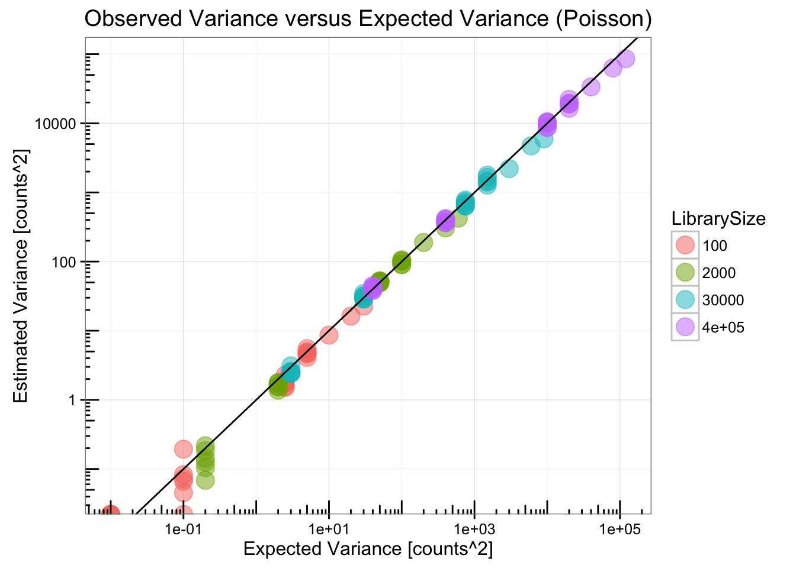
Notice how proportion on its own is a very bad predictor of the uncertainty/error!
title = "Weak error dependency on proportion value"
ggplot(data = bigdt2,
mapping = aes(x = TrueProportion,
y = abs(TrueProportion - meanCount/L) / TrueProportion,
color = LibrarySize)) +
geom_point(size=5, alpha=0.5) +
scale_y_log10() +
scale_x_log10() +
annotation_logticks(sides = "lb") +
xlab("Observed Proportion") +
ylab("Error [Proportion]") +
ggtitle(title)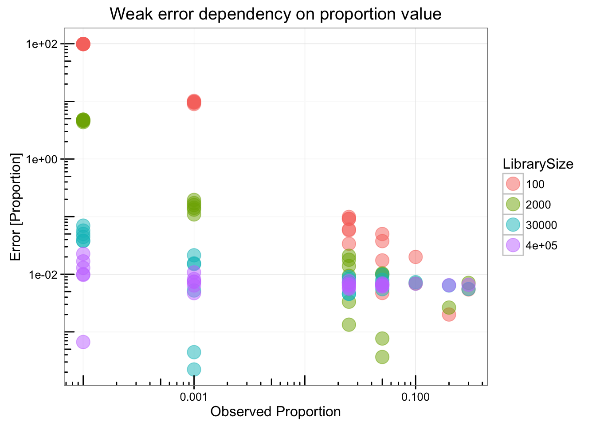
title = "Weak error dependency on proportion"
ggplot(data = bigdt,
mapping = aes(x = proportion,
y = log2(proportion / TrueProportion),
colour = LibrarySize)) +
geom_hline(yintercept = 0, size = 0.25) +
geom_point(alpha = 0.5) +
scale_x_log10() +
ylab("Log2(Observed / Truth)") +
annotation_logticks(sides = "b") +
ggtitle(title)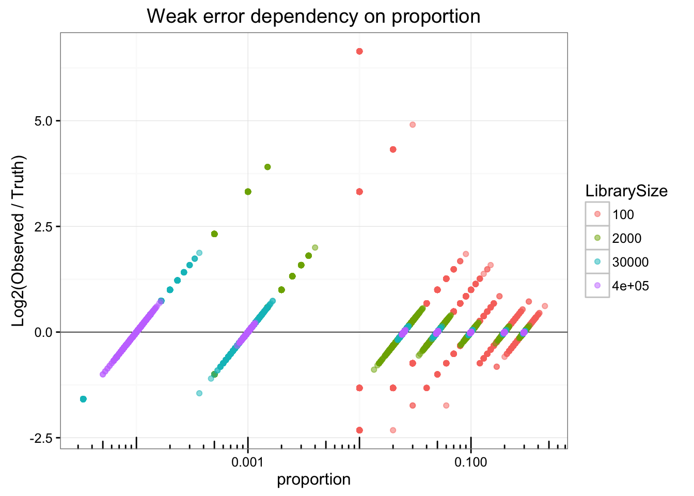
Meanwhile the uncertainty is actually highly structured with respect to counts (it is Poisson after all).
title = "Error strongly dependent on count"
ggplot(data = bigdt,
# mapping = aes(N, StdErr, colour = LibrarySize)) +
mapping = aes(N, log2(proportion / TrueProportion), colour = LibrarySize)) +
geom_hline(yintercept = 0, size = 0.25) +
geom_point(alpha = 0.5) +
ylab("Log2(Observed / Truth)") +
xlab("Count") +
scale_x_log10() +
annotation_logticks(sides = "b") +
ggtitle(title)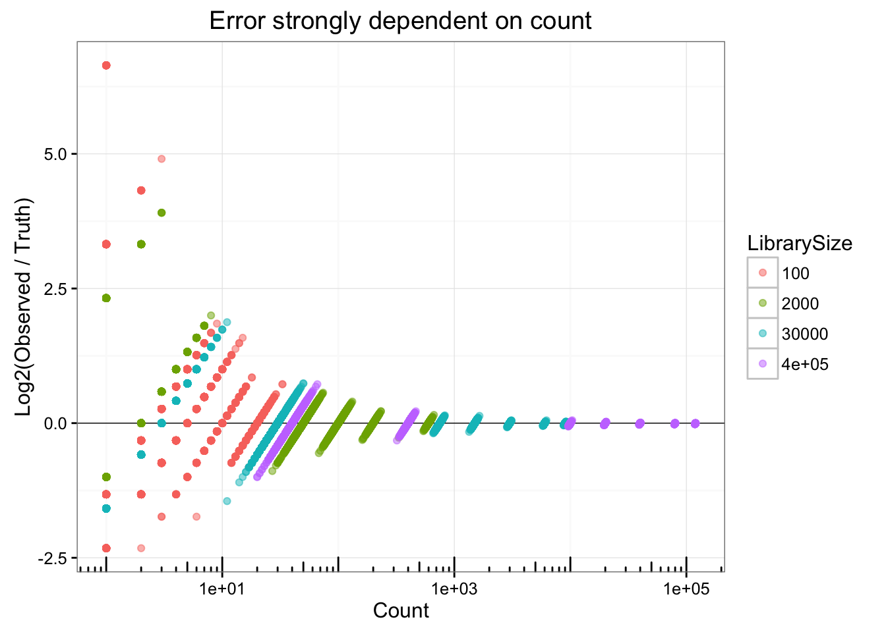
title = "Error strongly dependent on count"
ggplot(data = bigdt2,
mapping = aes(x = meanCount,
y = abs(TrueProportion - meanCount/L) / TrueProportion,
color=LibrarySize)) +
geom_point(size=5, alpha=0.5) +
scale_y_log10() +
scale_x_log10() +
annotation_logticks(sides = "lb") +
xlab("Mean Count") +
ylab("Error [Proportion]") +
ggtitle(title)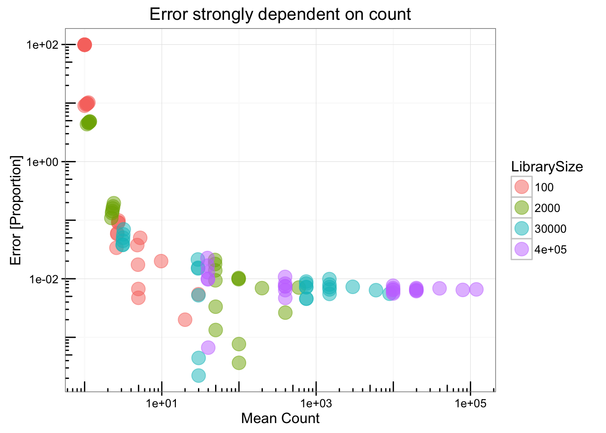
title = "Variance in Proportion Estimate v. Observed Mean Counts"
ggplot(data = bigdt[, .(meanCount = mean(N),
VarProp = var(proportion)),
by = .(LibrarySize, Taxa)],
mapping = aes(meanCount, VarProp, colour=LibrarySize)) +
geom_point(size=5, alpha=0.5) +
# geom_abline(intercept = 0, slope = 1) +
scale_y_log10() +
scale_x_log10() +
annotation_logticks(sides = "lb") +
ggtitle(title)## Warning: Removed 2 rows containing missing values (geom_point).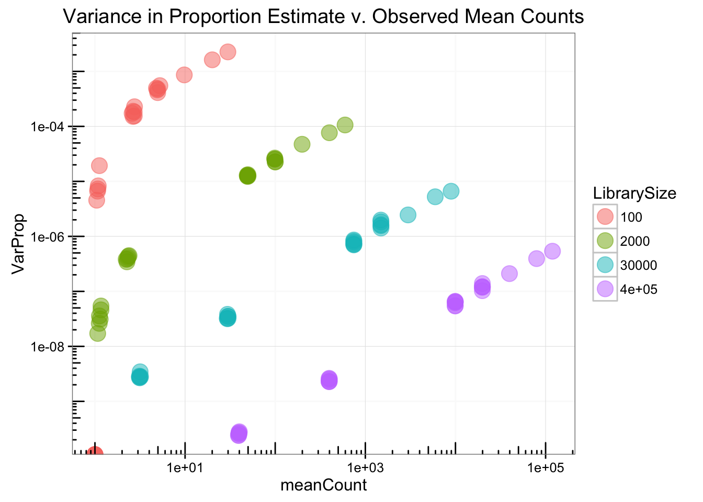
The uncertainty due to sampling is actually highly structured with respect to counts, following the Poisson distribution. For intuition, real experiments have shown that technical replicates (different sequencing runs of the same prepared sample) are also well described by the Poisson. It is clear from this simulation that information represented by the count of each taxa in each sample is highly predictive of the uncertainty in the corresponding proportion. Converting to proportions early and ignoring the discrete counts is perilous, especially at low values (e.g. rare taxa).